Singular Value Decomposition (SVD)
Erklärt anhand von Bildkomprimierung
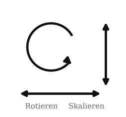
Eine Rotation ist eine Drehung um einen Winkel.
Eine Skalierung streckt oder staucht entlang einer Achse.
Diese beiden Operationen sind die geometrischen Bausteine, mit denen wir gleich eine lineare Abbildung in einfache Schritte zerlegen.
Die Matrixschreibweise kommt später; hier geht es zuerst nur um die sichtbare Wirkung.
Bevor wir Bilder komprimieren, betrachten wir ein Rätsel: Wie kommt man nur durch Rotationen und Skalierungen entlang der Achsen von der linken Grafik zur rechten?
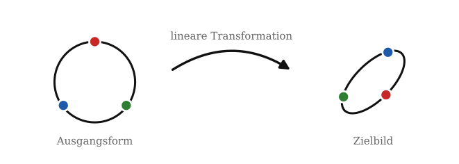
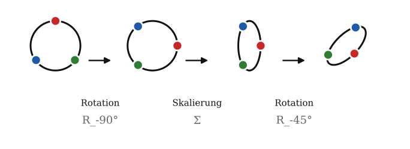
\[ R_{-90^\circ} = \begin{pmatrix} 0 & 1 \\ -1 & 0 \end{pmatrix} \]
\[ \Sigma = \begin{pmatrix} 0.45 & 0 \\ 0 & 1 \end{pmatrix} \]
\[ R_{-45^\circ} = \begin{pmatrix} \tfrac{\sqrt2}{2} & \tfrac{\sqrt2}{2} \\ -\tfrac{\sqrt2}{2} & \tfrac{\sqrt2}{2} \end{pmatrix} \]
Doch was hat das mit SVD zu tun?
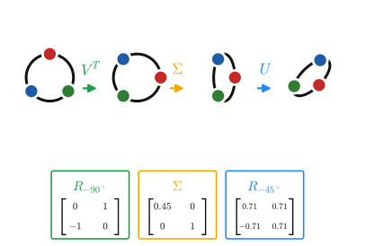
Im Kern ist das das Prinzip der SVD:
\[ A = {\color{#1e88ff}{U}}\,{\color{#f2aa00}{\Sigma}}\,{\color{#55c63a}{V^T}} \]
Eine lineare Abbildung wird in drei lesbare Bausteine zerlegt: erst eine Rotation oder Spiegelung, dann eine Skalierung, dann erneut eine Rotation oder Spiegelung.
Unser Ablauf von der vorherigen Folie ist dabei ein didaktisches Beispiel im Stil der SVD. Er zeigt das Grundprinzip, ist aber nicht die kanonische SVD, weil die Singulärwerte dort nach Größe sortiert werden und die stärkste Skalierung zuerst steht.
Für dieses Beispiel entsteht die Gesamtmatrix durch Multiplikation:
\[ A = {\color{#1e88ff}{R_{-45^\circ}}} {\color{#f2aa00}{\begin{pmatrix}0.45&0\\0&1\end{pmatrix}}} {\color{#55c63a}{R_{-90^\circ}}} \approx \begin{pmatrix} -0.707 & 0.318 \\ -0.707 & -0.318 \end{pmatrix} \]
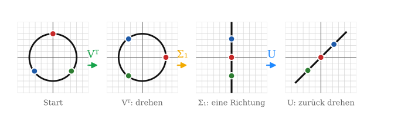
\[ \Sigma=\begin{pmatrix}0.45&0\\0&1\end{pmatrix}\binom{1}{1}=\binom{0.45}{1} \qquad\Longrightarrow\qquad \begin{pmatrix}{\color{#ff3b35}0}&0\\0&1\end{pmatrix}\binom{1}{1}=\binom{{\color{#ff3b35}0}}{1} \]
Den ersten Eintrag auf \({\color{#ff3b35}0}\) setzen löscht die horizontale Richtung — alle Punkte landen auf der \(y\)-Achse. (Die Werte stammen direkt aus dem Beispiel der Vorgängerfolie; in der kanonischen SVD wären sie absteigend sortiert.)
In der SVD \(A=U\Sigma V^T\) steckt die ganze Streckung in \(\Sigma\): dort stehen die Singulärwerte \(\sigma_1\ge\sigma_2\ge\dots\ge 0\).
Sie bestimmen, wie stark jede Richtung gewichtet wird. Einen Eintrag auf \(0\) zu setzen entfernt die zugehörige Richtung vollständig — aus einer Fläche wird eine Linie.
Genau das ist Dimensionsreduktion: unwichtige Richtungen weglassen. Dieselbe Idee trägt später die Bildkompression.
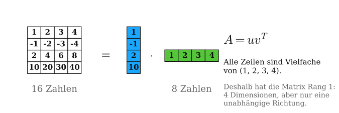
\[A = {\color{#19a7ff}{u}}\,{\color{#55c63a}{v^T}}\]
Die 4×4-Matrix links enthält 16 Zahlen. Sie lässt sich exakt als Produkt zweier Vektoren schreiben: ein blauer Spaltenvektor (4 Zahlen) multipliziert mit einem grünen Zeilenvektor (4 Zahlen) — zusammen nur 8 statt 16 Zahlen, mit identischem Ergebnis.
Lineare Abhängigkeit — Zeilen, die sich als Vielfache einer anderen schreiben lassen, liefern keine neue Information. Alle vier Zeilen dieser Matrix zeigen in dieselbe Richtung.
Zeilenraum — Der Raum aller Linearkombinationen der Zeilen heißt Zeilenraum. Obwohl die Matrix 4×4 groß ist, spannen die Zeilen nur eine einzige Linie auf — der Zeilenraum hat Dimension 1.
Rang — Die Dimension des Zeilenraums heißt Rang. Diese Matrix hat Rang 1, nicht Rang 4. Der Rang beschreibt nicht die Größe der Matrix, sondern wie viele Zeilen wirklich unabhängig sind.
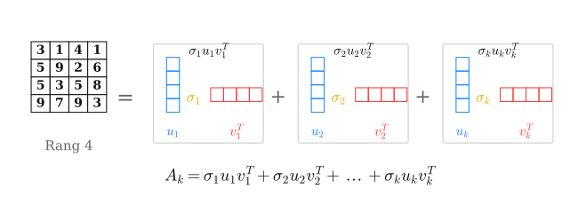
\[A_k = {\color{#f2aa00}{\sigma_1}} {\color{#19a7ff}{u_1}} {\color{#55c63a}{v_1^T}} + {\color{#f2aa00}{\sigma_2}} {\color{#19a7ff}{u_2}} {\color{#55c63a}{v_2^T}} + \dots + {\color{#f2aa00}{\sigma_k}} {\color{#19a7ff}{u_k}} {\color{#55c63a}{v_k^T}}\]
Bei einer Matrix mit Rang \(4\) sind die Zeilen nicht mehr alle Vielfache voneinander. Die einfache Zerlegung aus der vorherigen Folie reicht dann nicht mehr aus.
Das Grundprinzip bleibt aber gleich: Wir beschreiben die Matrix als Summe mehrerer Rang-1-Matrizen.
Für \(k=r\) ist das die vollständige Zerlegung. Für \(k<r\) entsteht eine Näherung: Je mehr Bausteine wir addieren, desto genauer wird sie. Für Kompression speichern wir nur die wichtigsten Bausteine und lassen kleine Beiträge weg.
Die Produktform
\[ A = {\color{#1e88ff}{U}} {\color{#f2aa00}{\Sigma}} {\color{#55c63a}{V^T}} \]
ist gleichbedeutend mit einer Summe aus einzelnen Rang-1-Matrizen:
\[ A = {\color{#f2aa00}{\sigma_1}} {\color{#1e88ff}{u_1}} {\color{#55c63a}{v_1^T}} + {\color{#f2aa00}{\sigma_2}} {\color{#1e88ff}{u_2}} {\color{#55c63a}{v_2^T}} + \dots + {\color{#f2aa00}{\sigma_r}} {\color{#1e88ff}{u_r}} {\color{#55c63a}{v_r^T}}. \]
\(u_i\)
Spalte aus \(U\)
\(\times\)
\(\sigma_i\)
Gewichtung aus \(\Sigma\)
\(\times\)
\(v_i^T\)
Zeile aus \(V^T\)
\(=\) ein Rang-1-Beitrag
Dieselbe Zerlegung in zwei Sichtweisen: oben als Produkt \(A=U\Sigma V^T\), unten als Summe einzelner Rang-1-Beiträge \(\sigma_i u_i v_i^T\).
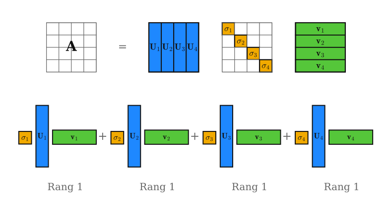
\({\color{#1e88ff}{u_i}}\) — Spalten von \(U\) · \({\color{#f2aa00}{\sigma_i}}\) — Singulärwerte in \(\Sigma\) · \({\color{#55c63a}{v_i^T}}\) — Zeilen von \(V^T\)
Jeder Block \({\color{#f2aa00}{\sigma_i}}{\color{#1e88ff}{u_i}}{\color{#55c63a}{v_i^T}}\) unten ist eine Rang-1-Matrix; aufsummiert ergeben sie genau die Produktform oben.
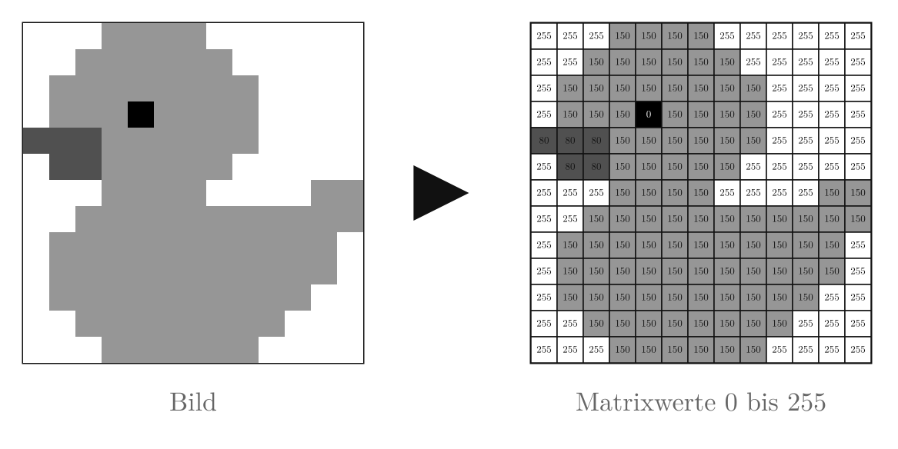
Bis hierhin haben wir Matrizen als Summen von Rang-1-Beiträgen betrachtet. Jetzt wenden wir genau diese Idee auf ein Bild an.
Ein Graustufenbild ist nichts anderes als eine Matrix \(A\): Jeder Eintrag ist ein Pixelwert zwischen \(0\) und \(255\).
\[ A = U\Sigma V^T, \]
zerlegt diese Pixelmatrix in geordnete Bildbausteine.
Die größten Singulärwerte beschreiben die wichtigsten Strukturen der Ente. Für die Kompression speichern wir nur diese stärksten Beiträge und lassen kleinere Details weg.
\[ A = U\Sigma V^T \]
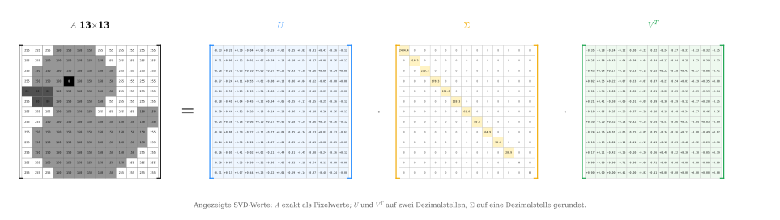
Links steht \(A\) als vollständige \(13\times13\)-Pixelmatrix der Ente. \(U\) und \(V^T\) sind orthogonale Matrizen: ihre Spalten bzw. Zeilen sind normierte, unabhängige Bildmuster. \(\Sigma\) ist diagonal; die Singulärwerte stehen absteigend auf der Diagonalen und zeigen, welche Muster das Bild am stärksten prägen.
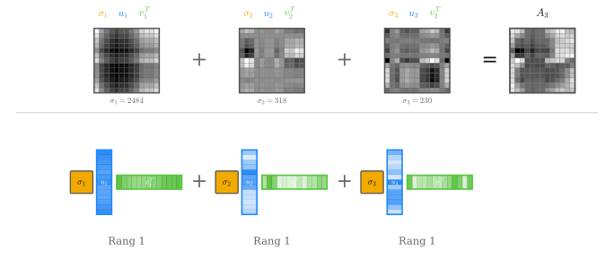
Jeder Rang-1-Term \(\sigma_i u_i v_i^T\) ergibt ein eigenes Muster (oben). Unten: der Singulärwert \(\sigma_i\) (gelb) gewichtet das äußere Produkt \(u_i v_i^T\) — ein Spaltenvektor mal einem Zeilenvektor. Die Summe \(A_3 = \sigma_1 u_1 v_1^T + \sigma_2 u_2 v_2^T + \sigma_3 u_3 v_3^T\) ist akkurat berechnet und individuell auf \([0,255]\) skaliert.
Bei einem Bild ist \(A\) die Matrix der Pixelwerte.
\[ A_k = \sum_{i=1}^{k} \sigma_i u_i v_i^T. \]
Mit jedem Rang kommt ein weiteres Muster dazu. Kleine Ränge speichern wenig, verlieren aber Details; größere Ränge nähern sich der Originalmatrix an.
Bei einem hochaufgelösten Bild wird die Pixelmatrix deutlich größer. Ein Originalbild mit \(m\) Zeilen und \(n\) Spalten speichert ungefähr \(m\cdot n\) Helligkeitswerte.
\[ \text{Original: } m\cdot n \\ \text{Rang-}k\text{: } k(m+n+1) \]
Bei hoher Auflösung lohnt sich diese Speicherung stärker: Für kleine \(k\) behalten wir nur wenige wichtige Bildmuster, sparen aber sehr viele Pixelwerte ein.
Je höher wir \(k\) wählen, desto mehr Details, Kanten und feine Kontraste kommen zurück. Gleichzeitig steigt aber auch die Datenmenge wieder.
Beim Einstein-Bild haben wir gesehen:
\[ A_k=\sum_{i=1}^{k}{\color{#f2aa00}{\sigma_i}}\,{\color{#1e88ff}{u_i}}\,{\color{#16a34a}{v_i^T}} \]
Dabei behalten wir nur die ersten \(k\) Bildbausteine.
Das funktioniert nur, wenn die Bausteine vorher nach Wichtigkeit geordnet wurden: Die ersten Bausteine müssen die stärksten Bildanteile enthalten.
Wie findet die SVD solche wichtigen Bausteine?
Ein Bild als Matrix \(A\in\mathbb{R}^{m\times n}\) enthält \(m\cdot n\) Pixelwerte.
Für Kompression wollen wir das Bild nicht als einzelne Pixelwerte betrachten, sondern als Summe einfacher Bildanteile:
\[ A\approx B_1+B_2+\dots+B_k. \]
Dabei soll gelten:
Jeder Baustein soll also eine einfache Struktur erklären: zuerst grobe, starke Anteile, später feinere Details.
Was steckt in einem einzelnen solchen Baustein?
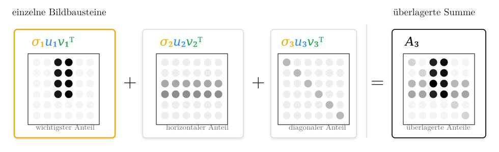
Wir greifen den wichtigsten Baustein aus der vorherigen Folie heraus: den vertikalen Anteil.
Für das Prinzip verwenden wir hier den kleinen Baustein aus Folie 17. Beim echten Bild hätten \(u_i\) und \(v_i\) entsprechend viele Einträge wie Bildzeilen und Bildspalten.
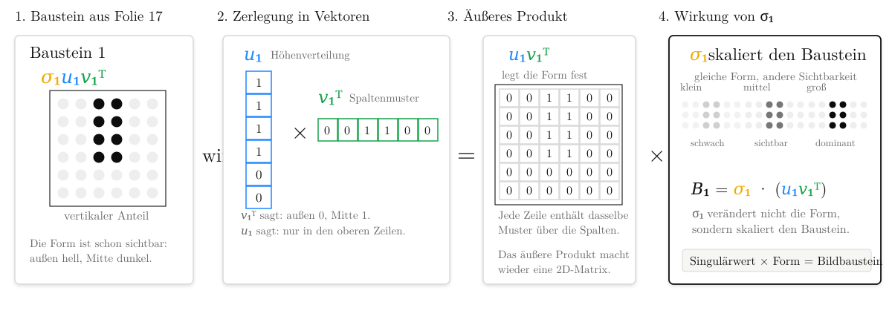
Zur Veranschaulichung verwenden wir hier 0/1-Werte. In der echten SVD sind \(u_i\) und \(v_i\) normierte Vektoren.
\(u_1v_1^T\) legt die Form fest. \(\sigma_1\) ist der Singulärwert dieses Bausteins; anschaulich bestimmt er seine Stärke.
Die nächste Frage ist: Welche dieser Bausteine sind stark genug, um zuerst gespeichert zu werden?
Jede Schicht soll einen eigenen Anteil des Bildes erklären. Wenn zwei Schichten fast dasselbe Muster enthalten, wäre die Zerlegung redundant: dieselbe Struktur würde mehrfach gespeichert.
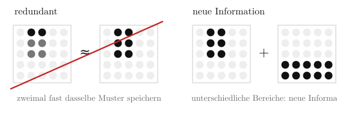
Für Kompression wollen wir aber, dass jeder gespeicherte Baustein wirklich neue Information bringt.
Mathematisch heißt das:
\[ {\color{#16a34a}{v_i^Tv_j}}=0 \quad\text{für } i\neq j, \]
Die Muster über die Spalten haben keinen gemeinsamen Anteil im Sinne des Skalarprodukts.
\[ {\color{#1e88ff}{u_i^Tu_j}}=0 \quad\text{für } i\neq j. \]
Die Höhenverteilungen haben keinen gemeinsamen Anteil.
Orthogonal heißt hier nicht räumlich getrennt. Die Schichten können an denselben Bildstellen wirken. Orthogonal heißt: Als normierte Vektoren enthalten sie keine gemeinsame Richtung, deshalb zählt man dieselbe Struktur nicht doppelt. Jeder Baustein bringt eine neue unabhängige Bildschicht.
Wie finden wir nun starke Muster, die gleichzeitig unabhängig sind?
Aus den letzten Folien wissen wir: Ein guter SVD-Baustein soll zwei Bedingungen erfüllen:
Ein kompletter Baustein hat die Form
\[ {\color{#f2aa00}{B_i}} = {\color{#f2aa00}{\sigma_i}}{\color{#1e88ff}{u_i}}{\color{#16a34a}{v_i^T}}. \]
Um ihn zu finden, starten wir mit einem Teil davon:
\[ {\color{#16a34a}{v}}\in\mathbb{R}^n \]
\({\color{#16a34a}{v}}\) ist ein mögliches Muster über die Spalten.
Die nächste Frage lautet:
Wie messen wir, wie stark dieses Spaltenmuster (v) im Bild (A) vorkommt?
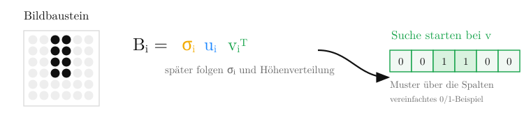
Um zu messen, wie stark ein Spaltenmuster \({\color{#16a34a}{v}}\) im Bild vorkommt, wenden wir \(A\) auf dieses Muster an:
\[ A{\color{#16a34a}{v}} \]
Dabei gilt:
\[ {\color{#16a34a}{v}}\in\mathbb{R}^n \qquad A{\color{#16a34a}{v}}\in\mathbb{R}^m. \]
Also: \({\color{#16a34a}{v}}\) hat einen Wert pro Bildspalte, \(A{\color{#16a34a}{v}}\) einen Wert pro Bildzeile.
Für die \(j\)-te Bildzeile gilt:
\[ (A{\color{#16a34a}{v}})_j = \mathrm{Zeile}_j(A)\cdot{\color{#16a34a}{v}} \]
Jede Bildzeile wird also per Skalarprodukt mit dem Spaltenmuster \({\color{#16a34a}{v}}\) verglichen.
Passt das Muster gut zu einer Zeile, wird der Wert groß. Passt es kaum, wird der Wert klein.
Damit ist \(A{\color{#16a34a}{v}}\) die Höhenantwort des Bildes auf das Spaltenmuster.
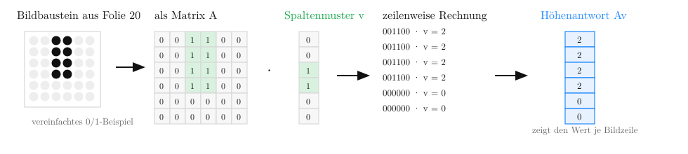
Die Höhenantwort \(A{\color{#16a34a}{v}}\) zeigt, wie stark das Spaltenmuster in jeder Bildzeile vorkommt. Ihre Länge misst die Gesamtstärke:
\[ \|A{\color{#16a34a}{v}}\| =\sqrt{2^2+2^2+2^2+2^2+0^2+0^2} =4. \]
Je größer \(\|A{\color{#16a34a}{v}}\|\), desto stärker ist die Antwort des Bildes auf das Muster \({\color{#16a34a}{v}}\). Damit wird unsere Suche konkret:
\[ \max_{\|{\color{#16a34a}{v}}\|=1}\|A{\color{#16a34a}{v}}\|. \]
Wir suchen das normierte Spaltenmuster, das die stärkste Höhenantwort erzeugt. Im Beispiel verwenden wir 0/1-Werte. Für die eigentliche Suche normieren wir \(v\) auf \(\|v\|=1\), damit alle Spaltenmuster gleich lang sind und \(\|Av\|\) nur die Antwort des Bildes auf dieses Muster misst – nicht eine künstliche Skalierung von \(v\).
\[ A{\color{#16a34a}{v}}=\text{Höhenantwort}, \qquad \|A{\color{#16a34a}{v}}\|=\text{Gesamtstärke}. \]
Wir haben jetzt eine Suchfrage:
\[ \max_{\|{\color{#16a34a}{v}}\|=1}\|A{\color{#16a34a}{v}}\|. \]
Dafür wäre der Spektralsatz hilfreich, weil er orthogonale Richtungen liefert.
Für eine symmetrische Matrix \(S\) gilt:
\[ S=Q\Lambda Q^T, \qquad S q_i=\lambda_i q_i. \]
Die Spalten von \(Q\) sind orthogonale Richtungen. In unserer SVD-Herleitung werden die zugehörigen Eigenwerte später zu Quadraten der Singulärwerte.
Aber der Spektralsatz gilt für symmetrische quadratische Matrizen.
Unsere Bildmatrix ist im Allgemeinen
\[ A\in\mathbb{R}^{m\times n} \]
und damit oft rechteckig. Außerdem ist sie meist nicht symmetrisch:
\[ A^T\neq A. \]
Anschaulich passiert bei \(A\):
\[ A:\mathbb{R}^n\to\mathbb{R}^m. \]
Ein Spaltenmuster \({\color{#16a34a}{v}}\) wird zu einer Höhenantwort \(A{\color{#16a34a}{v}}\).
Der Spektralsatz braucht dagegen eine symmetrische quadratische Matrix, die einen Vektor wieder in denselben Raum abbildet.
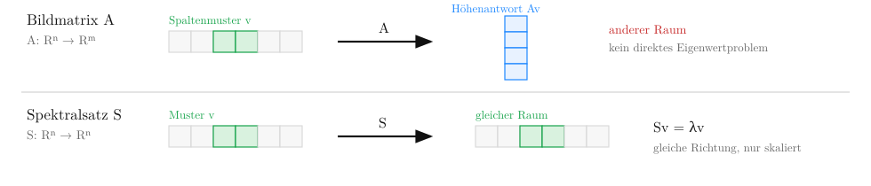
Unsere Suchfrage war:
\[ \max_{\|{\color{#16a34a}{v}}\|=1}\|A{\color{#16a34a}{v}}\|. \]
Da \(\|A{\color{#16a34a}{v}}\|\ge0\), dürfen wir stattdessen die quadrierte Norm maximieren:
\[ \max_{\|{\color{#16a34a}{v}}\|=1}\|A{\color{#16a34a}{v}}\|^2. \]
Das ändert nicht, welches Muster gewinnt. Beispiel: Aus \(4>2\) wird \(16>4\). Die Reihenfolge bleibt gleich.
Der Vorteil: Die quadrierte Länge kann als Skalarprodukt geschrieben werden:
\[ \|A{\color{#16a34a}{v}}\|^2 \]
\[ = (A{\color{#16a34a}{v}})^T(A{\color{#16a34a}{v}}) \]
\[ = {\color{#16a34a}{v^T}}A^TA{\color{#16a34a}{v}}. \]
Der entscheidende Schritt ist:
\[ (A{\color{#16a34a}{v}})^T={\color{#16a34a}{v^T}}A^T. \]
Dadurch erscheint zwischen den beiden \({\color{#16a34a}{v}}\)-Termen automatisch \(A^TA\).
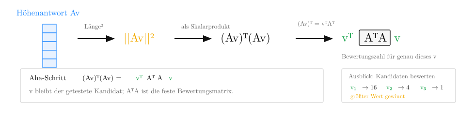
Für ein festes Spaltenmuster \({\color{#16a34a}{v}}\) ist \({\color{#16a34a}{v^T}}A^TA{\color{#16a34a}{v}}\) genau dieselbe Zahl wie \(\|A{\color{#16a34a}{v}}\|^2\): die quadrierte Norm der Höhenantwort im Originalbild.
\(A^TA\) ist die Bewertungsmatrix. Die äußeren \({\color{#16a34a}{v}}\)-Terme markieren den Kandidaten, der gerade getestet wird.
Aus der letzten Folie wurde unsere Suche:
\[ \max_{\|{\color{#16a34a}{v}}\|=1}\|A{\color{#16a34a}{v}}\|^2 = \max_{\|{\color{#16a34a}{v}}\|=1}{\color{#16a34a}{v^T}}A^TA{\color{#16a34a}{v}}. \]
Damit suchen wir nicht mehr direkt in der Höhenantwort \(A{\color{#16a34a}{v}}\), sondern bewerten jedes Spaltenmuster \({\color{#16a34a}{v}}\) mit \(A^TA\).
Wichtig: \(A^TA\) ersetzt nicht das Bild \(A\). Es ist die Bewertungsmatrix für die Spaltenmuster.
Jetzt passt \(A^TA\) zum Spektralsatz:
\[ A^TA\in\mathbb{R}^{n\times n} \]
Start und Ziel liegen wieder im Spaltenmuster-Raum.
Außerdem ist \(A^TA\) symmetrisch:
\[ (A^TA)^T=A^TA. \]
Für solche Matrizen liefert der Spektralsatz orthogonale Eigenrichtungen.
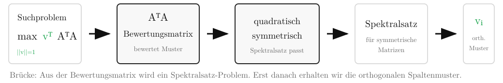
Unsere Suche lautet jetzt:
\[ \max_{\|{\color{#16a34a}{v}}\|=1}{\color{#16a34a}{v^T}}A^TA{\color{#16a34a}{v}}. \]
Wir suchen also normierte Spaltenmuster \({\color{#16a34a}{v}}\), die von \(A^TA\) möglichst stark bewertet werden.
Da \(A^TA\) symmetrisch ist, dürfen wir den Spektralsatz anwenden.
Er liefert Eigenvektoren:
\[ A^TA{\color{#16a34a}{v_i}} = \lambda_i{\color{#16a34a}{v_i}}. \]
Die Eigenvektoren \({\color{#16a34a}{v_i}}\) sind die gesuchten Spaltenmuster.
Das bedeutet: \(A^TA\) verändert die Richtung \({\color{#16a34a}{v_i}}\) nicht, sondern skaliert sie nur mit \(\lambda_i\). Solche Richtungen sind stabile Muster der Bewertungsmatrix.
Der Spektralsatz liefert genau das, was wir brauchen:
\[ {\color{#16a34a}{v_i^Tv_j}}=0 \qquad (i\ne j) \]
Die Muster speichern keine doppelte Richtung.
\[ \lambda_1\ge\lambda_2\ge\dots\ge0 \]
Die ersten \({\color{#16a34a}{v_i}}\) gehören zu den größten Eigenwerten.
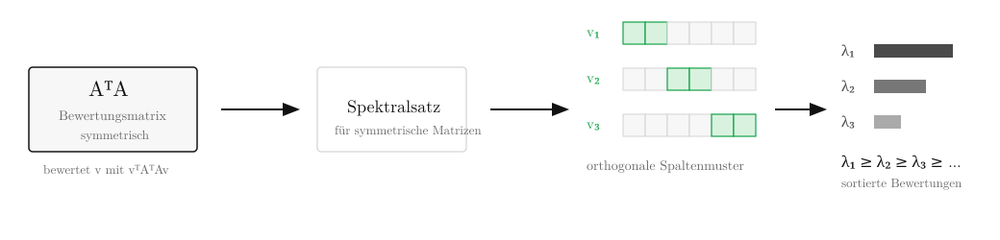
Wir haben jetzt unabhängige Spaltenmuster \({\color{#16a34a}{v_i}}\) und zugehörige Eigenwerte \(\lambda_i\). Nächste Frage: Warum gilt \(\lambda_i={\color{#f2aa00}{\sigma_i^2}}\)?
Aus dem Spektralsatz kennen wir jetzt die Spaltenmuster \({\color{#16a34a}{v_i}}\):
\[ A^TA{\color{#16a34a}{v_i}} = \lambda_i{\color{#16a34a}{v_i}}. \]
Jetzt prüfen wir die Norm der Höhenantwort dieses gefundenen Musters im Originalbild \(A\).
Für ein gefundenes Spaltenmuster \({\color{#16a34a}{v_i}}\) messen wir:
\[ \|A{\color{#16a34a}{v_i}}\|^2. \]
Aus der vorherigen Umformung wissen wir:
\[ \|A{\color{#16a34a}{v_i}}\|^2 = {\color{#16a34a}{v_i^T}}A^TA{\color{#16a34a}{v_i}}. \]
Jetzt setzen wir die Eigenvektorgleichung ein:
\[ \|A{\color{#16a34a}{v_i}}\|^2 = {\color{#16a34a}{v_i^T}}(\lambda_i{\color{#16a34a}{v_i}}) = \lambda_i({\color{#16a34a}{v_i^T}}{\color{#16a34a}{v_i}}). \]
Da \({\color{#16a34a}{v_i}}\) normiert ist, gilt:
\[ {\color{#16a34a}{v_i^T}}{\color{#16a34a}{v_i}}=1, \qquad \|A{\color{#16a34a}{v_i}}\|^2=\lambda_i. \]
Damit ist der Eigenwert \(\lambda_i\) das Quadrat des zugehörigen Singulärwerts.
\[ \lambda_i=\|A{\color{#16a34a}{v_i}}\|^2, \qquad {\color{#f2aa00}{\sigma_i}}=\|A{\color{#16a34a}{v_i}}\|=\sqrt{\lambda_i}. \]
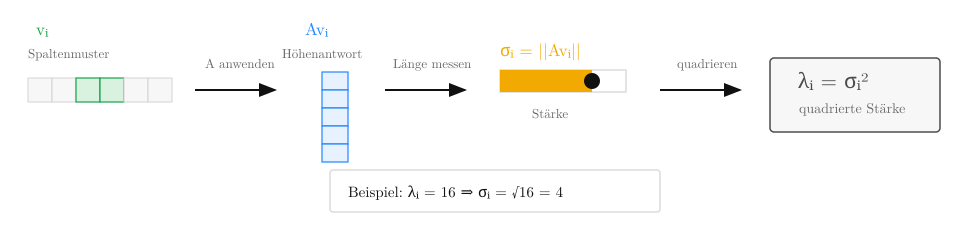
Merke: \(\lambda_i={\color{#f2aa00}{\sigma_i^2}}\) und \({\color{#f2aa00}{\sigma_i}}=\|A{\color{#16a34a}{v_i}}\|\). Als Nächstes fehlt noch die Höhenverteilung \({\color{#1e88ff}{u_i}}\).
Aus der letzten Folie kennen wir:
Für den vollständigen Baustein fehlt:
\[ {\color{#f2aa00}{B_i}} = {\color{#f2aa00}{\sigma_i}}{\color{#1e88ff}{u_i}}{\color{#16a34a}{v_i^T}}. \]
Leitfrage: In welchen Bildzeilen kommt \({\color{#16a34a}{v_i}}\) vor?
Dazu benutzen wir wieder das Originalbild \(A\):
\[ A{\color{#16a34a}{v_i}}. \]
Das ist die Höhenantwort: ein Wert pro Bildzeile.
\[ \|A{\color{#16a34a}{v_i}}\|={\color{#f2aa00}{\sigma_i}}. \]
Also enthält \(A{\color{#16a34a}{v_i}}\) die Höhenform und den Singulärwert als Skalierung. Für die SVD trennen wir beides:
\[ A{\color{#16a34a}{v_i}}={\color{#f2aa00}{\sigma_i}}{\color{#1e88ff}{u_i}}, \qquad {\color{#1e88ff}{u_i}}=\frac{A{\color{#16a34a}{v_i}}}{\sigma_i} \quad(\sigma_i>0). \]
Durch das Teilen durch \({\color{#f2aa00}{\sigma_i}}\) bleibt die Form über die Höhe erhalten; die Skalierung durch den Singulärwert wird entfernt.
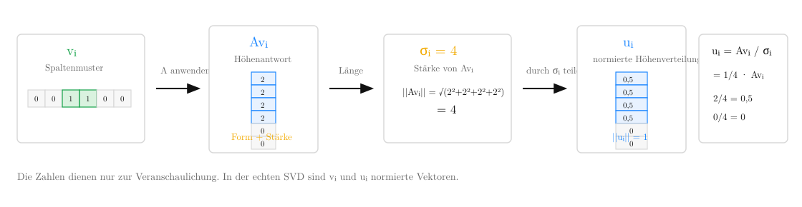
Letzte Folie:
\[ {\color{#1e88ff}{u_i}} = \frac{A{\color{#16a34a}{v_i}}}{\sigma_i}. \]
Umgestellt:
\[ A{\color{#16a34a}{v_i}} = {\color{#f2aa00}{\sigma_i}}{\color{#1e88ff}{u_i}}. \]
Das heißt: Die Höhenantwort des Spaltenmusters besteht aus Singulärwert mal normierter Höhenverteilung.
Damit kennen wir alle drei Teile:
\[ {\color{#f2aa00}{B_i}} = {\color{#f2aa00}{\sigma_i}} {\color{#1e88ff}{u_i}} {\color{#16a34a}{v_i^T}}. \]
Das äußere Produkt \({\color{#1e88ff}{u_i}}{\color{#16a34a}{v_i^T}}\) macht daraus eine 2D-Bildschicht.
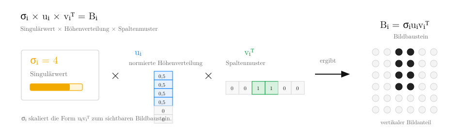
Aus der Kernbeziehung \(A{\color{#16a34a}{v_i}}={\color{#f2aa00}{\sigma_i}}{\color{#1e88ff}{u_i}}\) wird mit \({\color{#16a34a}{v_i^T}}\) der Matrixbaustein \({\color{#f2aa00}{B_i}}={\color{#f2aa00}{\sigma_i}}{\color{#1e88ff}{u_i}}{\color{#16a34a}{v_i^T}}\).
Merke: Höhenantwort plus Spaltenmuster ergibt die vollständige Bildschicht. Damit kennen wir wieder die Bausteinform aus dem Anfang der Herleitung.
Auf der letzten Folie hatten wir einen einzelnen Bildbaustein:
\[ {\color{#f2aa00}{B_i}} = {\color{#f2aa00}{\sigma_i}}{\color{#1e88ff}{u_i}}{\color{#16a34a}{v_i^T}}. \]
Das ganze Bild entsteht, wenn wir alle nichtverschwindenden Bausteine addieren:
\[ A=B_1+B_2+\dots+B_r \]
also:
\[ A=\sum_{i=1}^{r}{\color{#f2aa00}{\sigma_i}}{\color{#1e88ff}{u_i}}{\color{#16a34a}{v_i^T}}. \]
\(r\) ist die Anzahl der positiven Singulärwerte:
\[ r=\operatorname{rang}(A). \]
Wenn \(\sigma_i=0\), dann ist \({\color{#f2aa00}{\sigma_i}}{\color{#1e88ff}{u_i}}{\color{#16a34a}{v_i^T}}=0\). Dieser Baustein trägt nichts zum Bild bei.
Die Summe lässt sich kompakt als Matrixprodukt schreiben:
\[ {\color{#1e88ff}{U_r}}=(u_1,\dots,u_r), \qquad {\color{#16a34a}{V_r}}=(v_1,\dots,v_r). \]
\[ {\color{#f2aa00}{\Sigma_r}}= \begin{pmatrix} \sigma_1 & & 0\\ & \ddots & \\ 0 & & \sigma_r \end{pmatrix} \]
\[ A={\color{#1e88ff}{U_r}}{\color{#f2aa00}{\Sigma_r}}{\color{#16a34a}{V_r^T}}. \]
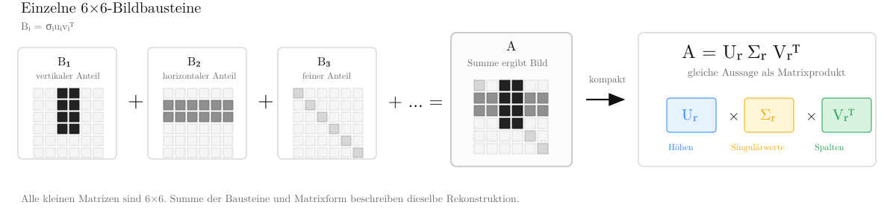
Aus der letzten Folie wissen wir:
\[ A=\sum_{i=1}^{r}{\color{#f2aa00}{\sigma_i}}u_i v_i^T. \]
Das Bild ist also eine Summe sortierter Bildbausteine.
Für Kompression behalten wir nur die ersten \(k\) Bausteine:
\[ A_k=\sum_{i=1}^{k}{\color{#f2aa00}{\sigma_i}}u_i v_i^T. \]
Die weggelassenen Bausteine bilden den Fehler:
\[ A-A_k=\sum_{i=k+1}^{r}{\color{#f2aa00}{\sigma_i}}u_i v_i^T. \]
Weil die Singulärwerte absteigend sortiert sind, lassen wir genau die schwächsten Bildschichten weg.
Der Singulärwert eines Bausteins ist \({\color{#f2aa00}{\sigma_i}}\).
Weil die SVD-Bausteine orthogonal zueinander sind, addieren sich die Quadrate ihrer Singulärwerte sauber:
\[ \|A-A_k\|_F^2 = \sum_{i=k+1}^{r}{\color{#f2aa00}{\sigma_i^2}}. \]
Der Fehler besteht genau aus der Energie der weggelassenen Bildschichten.
Wenn die weggelassenen \({\color{#f2aa00}{\sigma_i}}\) klein sind, ist auch der Rekonstruktionsfehler klein.
Eckart-Young-Mirsky sagt zusätzlich:
\[ \|A-A_k\|_F \le \|A-B\|_F \quad \text{für alle } \operatorname{rang}(B)\le k. \]
Also ist \(A_k\) die beste Rang-\(k\)-Näherung im Frobeniusfehler.
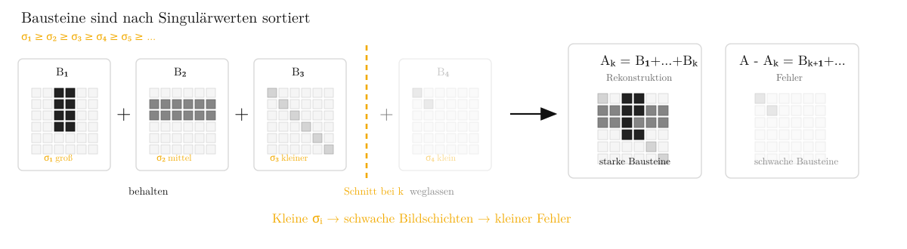
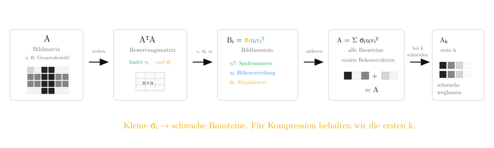
Baustein
\[ {\color{#f2aa00}{B_i}}={\color{#f2aa00}{\sigma_i}}{\color{#1e88ff}{u_i}}{\color{#16a34a}{v_i^T}} \]
Singulärwert × Höhenverteilung × Spaltenmuster
Sortierung
\[ {\color{#f2aa00}{\sigma_1}}\ge{\color{#f2aa00}{\sigma_2}}\ge\dots \]
Große \({\color{#f2aa00}{\sigma_i}}\) bedeuten wichtige Bildanteile.
Kompression
\[ A_k=\sum_{i=1}^{k}{\color{#f2aa00}{\sigma_i}}{\color{#1e88ff}{u_i}}{\color{#16a34a}{v_i^T}} \]
Wir behalten die stärksten Bausteine.
Die SVD macht sichtbar, welche Bildstrukturen wichtig sind, und erlaubt dadurch eine kontrollierte Kompression.
Bei der Erstellung dieser Themenausarbeitung wurden KI-gestützte Werkzeuge gemäß der KI-Leitlinie Hochschullehre Bayern wie folgt eingesetzt:
| KI-Werkzeug | Einsatzzweck |
|---|---|
| Claude (Anthropic) | Strukturierung und sprachliche Überarbeitung der Folien |
| Claude (Anthropic) | Erzeugung der Python-Skripte für die generierten Visualisierungen |
| Claude (Anthropic) | Unterstützung bei der Python-Implementierung der SVD-Bildkompression |
Hiermit versichere ich, dass ich die vorliegende Arbeit eigenständig verfasst und keine anderen als die angegebenen Quellen und Hilfsmittel verwendet habe. Alle übernommenen Inhalte sowie mit Unterstützung von KI generierten Inhalte wurden entsprechend den anerkannten wissenschaftlichen Grundsätzen oder entsprechend der Regelungen zur Kennzeichnung von KI-Inhalten kenntlich gemacht. Ausgenommen von der Kenntlichmachung sind orthografische oder grammatikalische Korrekturen, Übersetzungen sowie nicht-sinnverändernde Verbesserungen von Formulierungen. Ich bin mir bewusst, dass mit KI generierte Texte keine Garantie für die Qualität von Inhalten und Text bieten. Daher erkläre ich, dass ich KI-Werkzeuge lediglich als Hilfsmittel genutzt habe, die von KI generierten Inhalte kritisch überprüft habe und mein eigenständiger sowie kreativer Einfluss in dieser Arbeit überwiegt. Ich versichere, dass ich Inhalte meiner Arbeit vollständig verstanden habe und selbstständig vertreten kann. Ich versichere, dass ich ausschließlich KI-Werkzeuge verwendet habe, deren Nutzung vom Prüfer oder der Prüferin als Hilfsmittel zugelassen wurden.